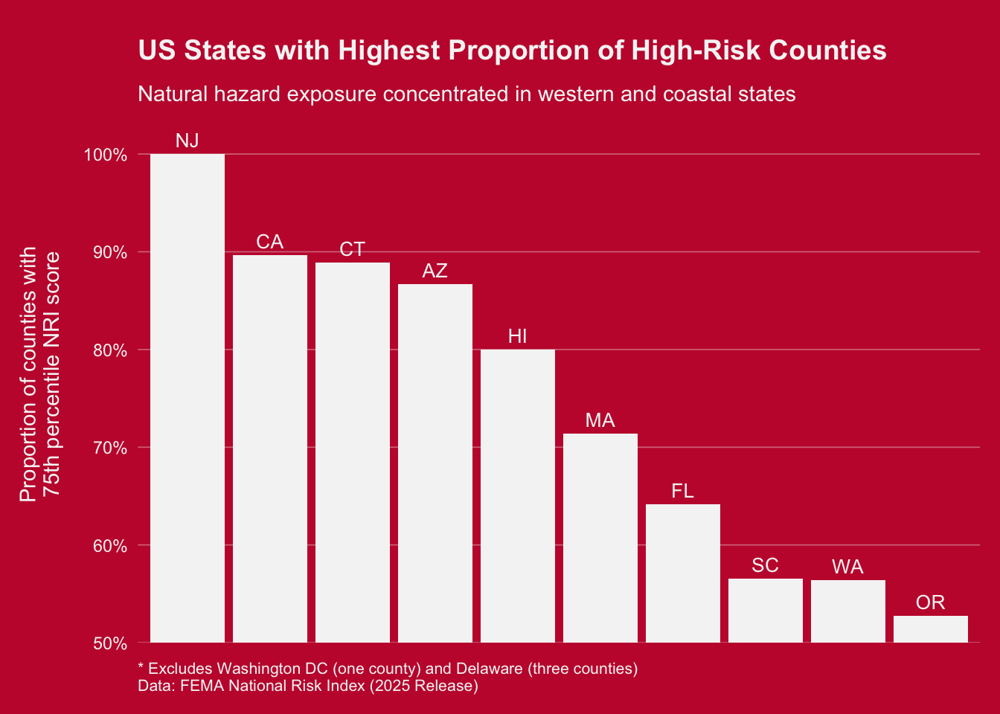

Code
library(tidyverse)
library(janitor)
library(here)The purpose of this analysis is to compare National Risk Index (NRI) scores for California counties to those in other states across the US. This analysis utilizes the National Risk Index (NRI) Counties feature layer provided by FEMA. The NRI Counties feature layer contains county-level data for the Risk Index, Expected Annual Loss, Social Vulnerability, and Community Resilience.The National Risk Index data helps to illustrate the communities most at risk for 18 natural hazards across the United States and territories: avalanche, coastal flooding, cold wave, drought, earthquake, hail, heat wave, hurricane, ice storm, inland flooding, landslide, lightning, strong wind, tornado, tsunami, volcanic activity, wildfire, and winter weather. The National Risk Index data provides Risk Index values, scores and ratings based on data for Expected Annual Loss due to natural hazards, Social Vulnerability, and Community Resilience. Separate values, scores and ratings are also provided for Expected Annual Loss, Social Vulnerability, and Community Resilience.[1]
library(tidyverse)
library(janitor)
library(here)nri_raw <- read_csv(here("data/National_Risk_Index_Counties_807384124455672111.csv"), show_col_types = FALSE) %>%
clean_names()object_id, state_name, state_name_abbreviation, county_name, county_fips_code, population_2020, building_value, agricultural_value, national_risk_index_score_composite, expected_annual_loss_score_composite.
The final National Risk Index (NRI) Composite Risk Score represents a nationally standardized measure of natural hazard risk that integrates multi-hazard exposure, community vulnerability, and community resilience. The score is calculated as the product of aggregated hazard risk and social vulnerability, adjusted by resilience as a mitigating factor, and reflects relative risk compared to other U.S. counties rather than absolute probability or expected loss.
I’m interested in seeing how the composite NRI Scores compare to those of other states. Specifically, I want to see how California ranks among states with the highest ratio of high NRI counties to low NRI counties.
# Select columns I'm interested in
nri_clean <- nri_raw %>%
select("objectid", "state_name", "state_name_abbreviation", "county_name", "county_fips_code", "national_risk_index_score_composite",)For my visualization, I want to see how many of California counties are in the top 25 percent of NRI scorse nationwide. I also want to see how this compares to other states. Since every state has a different number of counties, I’m going to view this data as a proportion of highNRI:lowNRI counties per state. Also, I only want to see the states with the highest scores, otherwise my visualization will get too busy.
# Set a threshold for the top 25% of scores for NRI
threshold <- quantile(nri_clean$national_risk_index_score_composite, 0.75, na.rm = TRUE)
# Make a dataframe of continental US states that have the highest ratio of counties with 25th percentile to counties in bottom 75th percentile.
nri_state <- nri_clean %>%
group_by(state_name_abbreviation) %>%
filter(!state_name_abbreviation %in% c("GU", "VI", "PR", "AS", "MP", "DC", "DE")) %>%
summarise(proportion_top_25_pct = mean(national_risk_index_score_composite >= threshold)) %>%
arrange(desc(proportion_top_25_pct))
# get top 10 states
nri_top10 <- nri_state %>%
slice_head(n = 10)
ggplot(nri_top10, aes(x = reorder(state_name_abbreviation, -proportion_top_25_pct), y = proportion_top_25_pct * 100)) +
geom_col(fill = "#F5F5F5") + # white bars
geom_text(aes(label = state_name_abbreviation), vjust = -0.5, color = "#F5F5F5", size = 3.5) + # state labels above bars
coord_cartesian(ylim = c(50, 105)) + # zoom y-axis to start at 50%
scale_y_continuous(
breaks = seq(50, 100, 10), # tick marks every 10%
labels = paste0(seq(50, 100, 10), "%"), # add % symbol
expand = c(0, 0) # no padding
) +
labs(
title = "US States with Highest Proportion of High-Risk Counties",
subtitle = "Natural hazard exposure concentrated in western and coastal states",
y = "Proportion of counties with\n75th percentile NRI score",
x = NULL,
caption = "* Excludes Washington DC (one county) and Delaware (three counties)\nData: FEMA National Risk Index (2025 Release)",
alt = "Bar chart showing top 10 US states by proportion of counties with FEMA National Risk Index scores in the top 25 percentile of the nation. New Jersey leads at 100%, closely followed by California, Connecticut and Arizona respectively at about 90%. Steep dropoff after Hawaii at ~80%. Number 10 is Oregon at just about 55%. Figure excludes Washington DC and Delaware due to their low number of counties."
) +
theme_minimal() +
theme(
plot.background = element_rect(fill = "#C41E3A", color = NA), # red background
panel.background = element_rect(fill = "#C41E3A", color = NA), # red panel
panel.grid.major.x = element_blank(), # remove vertical gridlines
panel.grid.minor = element_blank(), # remove minor gridlines
panel.grid.major.y = element_line(color = "#F5F5F560", linewidth = 0.3), # transparent white horizontal gridlines
axis.text = element_text(color = "#F5F5F5"), # white axis text
axis.title.y = element_text(color = "#F5F5F5", margin = margin(r = 10)), # white y-axis title
axis.text.x = element_blank(), # hide x-axis labels
plot.title = element_text(color = "#F5F5F5", size = 14, face = "bold", margin = margin(b = 10)), # white bold title
plot.subtitle = element_text(color = "#F5F5F5", size = 11, margin = margin(b = 0)), # white subtitle
plot.caption = element_text(color = "#F5F5F5", hjust = 0, size = 8, margin = margin(t = 10)), # white caption left-aligned
plot.margin = margin(t = 20, r = 10, b = 10, l = 10) # add top margin for label space
)
1. What are your variables of interest and what kinds of data (e.g. numeric, categorical, ordered, etc.) are they (a bullet point list is fine)? state_name, state_name_abbreviation, county_name, county_fips_code, national_risk_index_score_composite.
The risk score composite is numeric, state and county names are categorical.
2. How did you decide which type of graphic form was best suited for answering the question? What alternative graphic forms could you have used instead? Why did you settle on this particular graphic form?
I just wanted something that would make it easy to compare similar states to each other directly, and see a clear ranking. I thought about using a bubble chart or similar chart to see areas compared to one another on a larger spread (this would also be able to potentially show more US states), but I was really only intersted in the states with the highest NRI scores, and I think theres elegance in the simplicity of a bar graph.
3. Summarize your main finding in no more than two sentences.
California has the second highest proportion of counties with NRI scores in the 75th percentile. There is a steep dropoff in the proportion of above to below 75th percentile at about 80% in Hawaii.
4. What modifications did you make to this visualization to make it more easily readable?
Changing the colors to contrast effectively, and removing unnecessary plot ink link axes, and a plot box. I made my major gridlines slightly more transparent than my data labels so that the data labels would stand out even when the two overlap. Also specifying margins so no text was overlapping or crowded.
5. Is there anything you wanted to implement, but didn’t know how? If so, please describe. I would have liked to somehow indicate the number of counties per state, or the total area that is occupied by counties that are in the 75th percentile of NRI scores - But I couldn’t figure out how to add that without busying up the graph. Just adding another number on each bar wouldn’t have been that meaningful and would have made the figure look significantly worse. I couldn’t think of a creative and visually appealing way to incorporate another metric, population, land area, or number of counties. In my experimentation this one just seemed to be the most meaningful and useful.
[1]https://www.fema.gov/flood-maps/products-tools/national-risk-index
https://eds-240-data-viz.github.io/course-materials/assignments/HW2.html